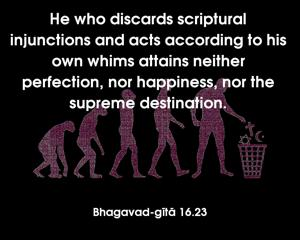
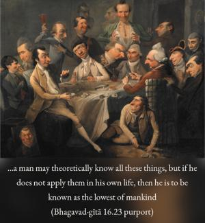
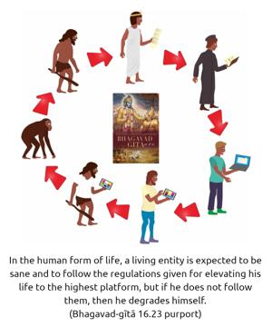

He who discards scriptural injunctions and acts according to his own whims attains neither perfection, nor happiness, nor the supreme destination.



As described before, the śāstra-vidhi, or the direction of the śāstra, is given to the different castes and orders of human society. Everyone is expected to follow these rules and regulations. If one does not follow them and acts whimsically according to his lust, greed and desire, then he never will be perfect in his life. In other words, a man may theoretically know all these things, but if he does not apply them in his own life, then he is to be known as the lowest of mankind. In the human form of life, a living entity is expected to be sane and to follow the regulations given for elevating his life to the highest platform, but if he does not follow them, then he degrades himself. But even if he follows the rules and regulations and moral principles and ultimately does not come to the stage of understanding the Supreme Lord, then all his knowledge becomes spoiled. And even if he accepts the existence of God, if he does not engage himself in the service of the Lord his attempts are spoiled. Therefore one should gradually raise himself to the platform of Kṛṣṇa consciousness and devotional service; it is then and there that he can attain the highest perfectional stage, not otherwise.
The word kāma-kārataḥ is very significant. A person who knowingly violates the rules acts in lust. He knows that this is forbidden, but still he acts. This is called acting whimsically. He knows that this should be done, but still he does not do it; therefore he is called whimsical. Such persons are destined to be condemned by the Supreme Lord. Such persons cannot have the perfection which is meant for the human life. The human life is especially meant for purifying one’s existence, and one who does not follow the rules and regulations cannot purify himself, nor can he attain the real stage of happiness.